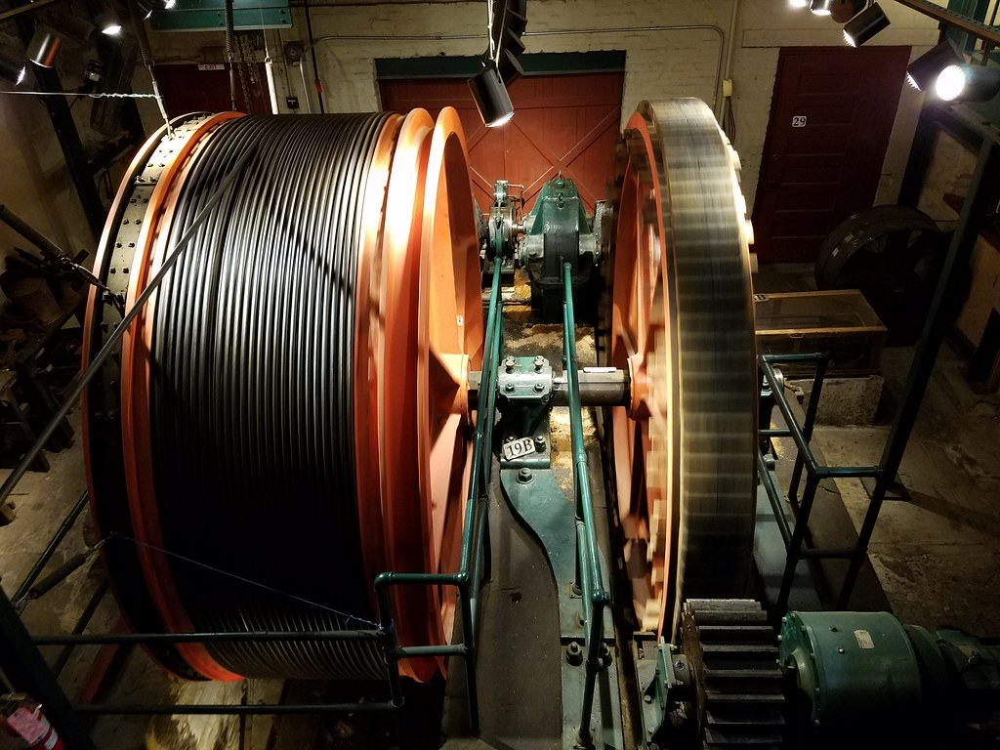

Early History:
The Duquesne Incline is one of those which follows very closely the tracks of an early coal hoist.
Old newspapers indicate the existence of such a conveyance as early as 1854. Residents apparently
referred to it as "Kirk Lewis' incline" and located it on the present site of The Duquesne Incline's
Upper Station. Grandview Avenue was then the High Street, and the area was just beginning to be converted
from farmland to homesites. This pleasantly-situated acreage was an excellent area to absorb some of the
expanding population of the city, but the problem of easy access was still to be solved.
Read more ...
Although plans for a freight and passenger incline are known to have existed much earlier, financial backing was exceedingly hard to find--even the modest sum of $47,000--and actual construction was delayed. Eventually, of course, difficulties were overcome and the Incline was built. It was opened to the public May 20, 1877. The Duquesne Incline was the first Pittsburgh incline designed and built by Samuel Diescher, for Kirk Bigham and Associates. Mr. Diescher, an engineer, had become the country's foremost builder of inclines. He was also to design and build most of those that followed.
At the time of its public opening, it was one of four inclined planes serving the summit of Coal Hill, which later came to be known as Mount Washington. The Duquesne Incline was operated, from 1877 until 1962 by The Duquesne Inclined Plane Company. From 1964 until the present, the Incline has been operated by the Society for the Preservation of The Duquesne Heights Incline; it has been owned by the Port Authority of Allegheny County.
Read less
Although plans for a freight and passenger incline are known to have existed much earlier, financial backing was exceedingly hard to find--even the modest sum of $47,000--and actual construction was delayed. Eventually, of course, difficulties were overcome and the Incline was built. It was opened to the public May 20, 1877. The Duquesne Incline was the first Pittsburgh incline designed and built by Samuel Diescher, for Kirk Bigham and Associates. Mr. Diescher, an engineer, had become the country's foremost builder of inclines. He was also to design and build most of those that followed.
At the time of its public opening, it was one of four inclined planes serving the summit of Coal Hill, which later came to be known as Mount Washington. The Duquesne Incline was operated, from 1877 until 1962 by The Duquesne Inclined Plane Company. From 1964 until the present, the Incline has been operated by the Society for the Preservation of The Duquesne Heights Incline; it has been owned by the Port Authority of Allegheny County.
Read less


Construction Facts about the Incline:
- Opened to Public: May 20, 1877
- Cost to Build: $47,000
- Length of Track: 794 feet
- Elevation: 400 feet
- Grade: 30.5 degrees
- Speed: 6 miles per hour
- Passenger: Capacity 18 per car
The Society for the Preservation of the Duquesne Heights Incline:
The Society for the Preservation of the Duquesne Heights Incline was formed in 1964 by the Duquesne Heights/Mount Washington neighborhood group that had rescued, repaired, and reopened the Incline in 1963. The purpose was to continue to restore and rehabilitate the cars, equipment, and both stations, and to establish the entire operation as a reliable commuter facility and a popular visitor attraction. Memberships in the society are available, call for details.